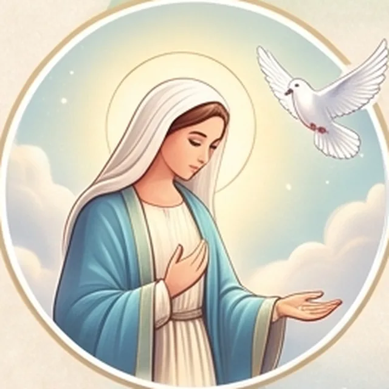
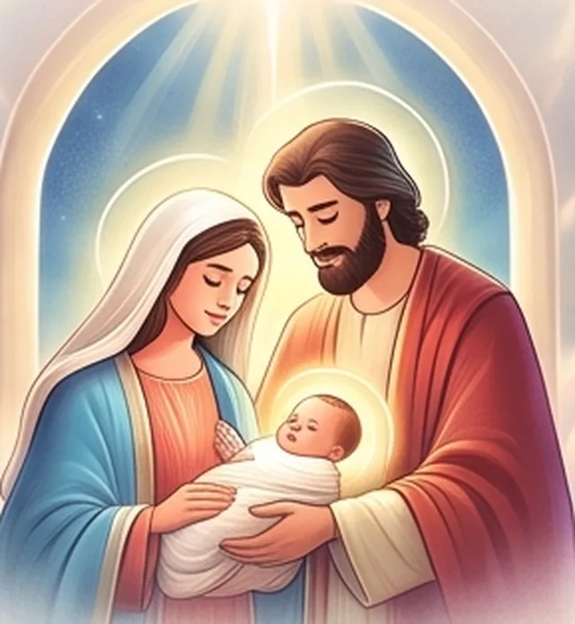
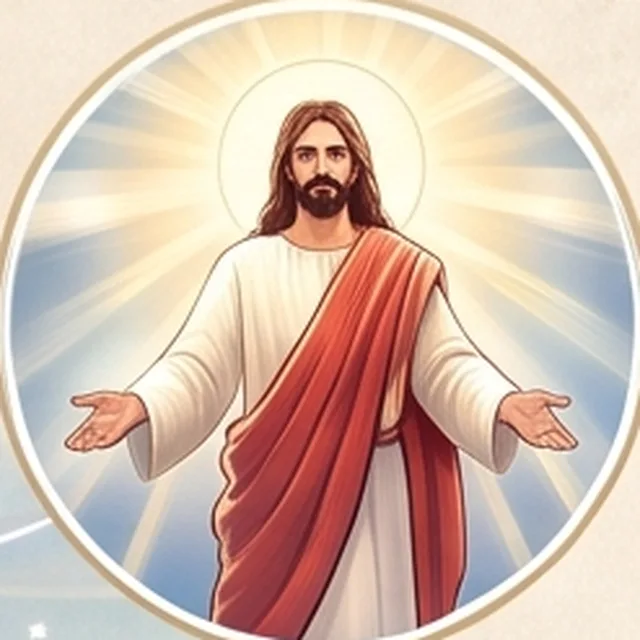
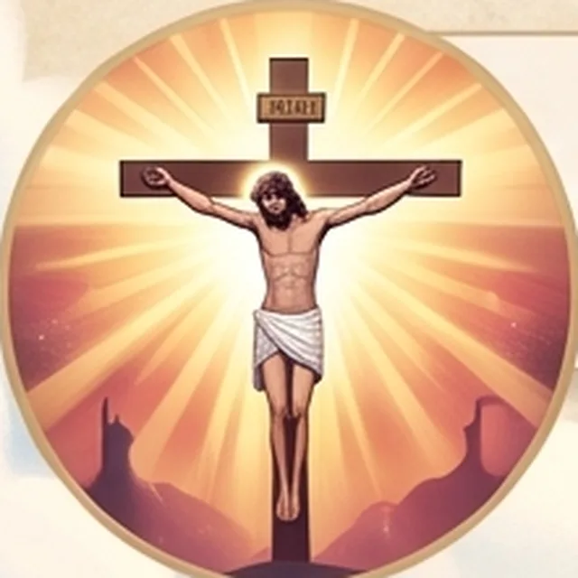
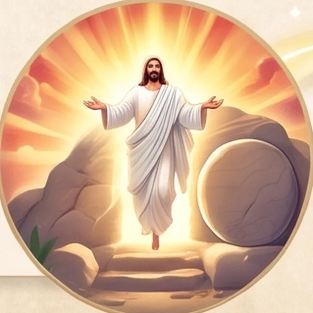
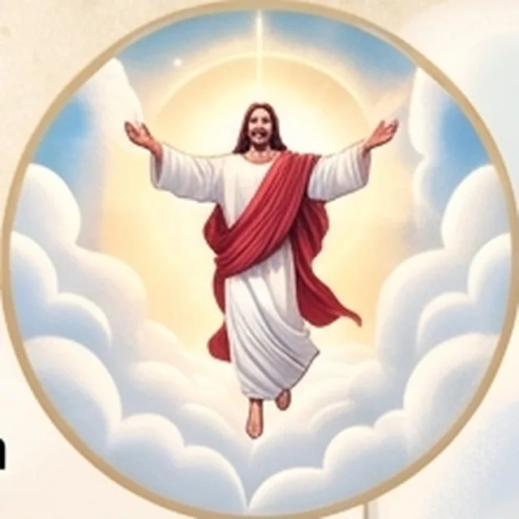

I
El «Fiat» de María
La respuesta libre y amorosa de la Virgen permite que el Salvador del mundo tome nuestra carne.
Nos enseña a decir «sí» a los planes de Dios con confianza.
Lc 1, 38«Hágase en mí según tu palabra».
Etapa 9 · 0 – 33 d.C.
Toda la historia
esperaba una luz.
Ponte en camino. Al bajar, avanzas hacia Él.
Mejor con el móvil en vertical · puedes apagar el sonido cuando quieras
00 Inicio
En la plenitud de los tiempos
Cristo Jesús · 0 – 33 d.C.
Cómo Dios se hizo hombre para salvarnos. Un camino para contemplar el corazón de nuestra fe.
01 / Encarnación
Dios entra en la historia humana tras el «sí» de María. Ya no es un misterio lejano: tiene rostro, familia y casa.

I
La respuesta libre y amorosa de la Virgen permite que el Salvador del mundo tome nuestra carne.
Nos enseña a decir «sí» a los planes de Dios con confianza.
Lc 1, 38«Hágase en mí según tu palabra».

II
Jesús, María y José forman el hogar donde Dios quiso hacerse presente en la tierra.
Nos recuerdan la santidad y el refugio que debe ser la familia.

III
Jesucristo encarna la cercanía divina: Dios presente y humano en la Tierra.
Ya no es un misterio lejano: camina a nuestro lado.
Mt 1, 23«Le pondrán por nombre Emmanuel».
02 / Promesa
Seis promesas jalonan el camino. Cada una se anunció siglos antes. Toca cada tarjeta para ver cómo se cumple en Jesús.
Dios nunca falla a su palabra.
Nuestra historia está guiada por un Dios fiel.
03 / Pascua
El Misterio Pascual: la misión de Jesús culmina en la cruz, la tumba vacía y la gloria.

I
Entrega voluntaria de Cristo para perdonar nuestras faltas. Nos abre las puertas del cielo.

II
Victoria sobre la muerte y el pecado al tercer día.
III
Pacto perpetuo sellado con su sangre, vivo en la Eucaristía que nos alimenta cada día.

IV
El Señor asciende y consolida su reinado eterno: nos ha preparado un lugar.
04 / Corazón
Tu vida está sostenida por un plan de amor inmenso. Del pesebre a la cruz y la resurrección, Jesús recorrió todo este camino por ti.
¿Cómo puedes hoy, a ejemplo de María, abrirle las puertas de tu corazón para que Él sea el centro de tu hogar y de tu caminar diario?